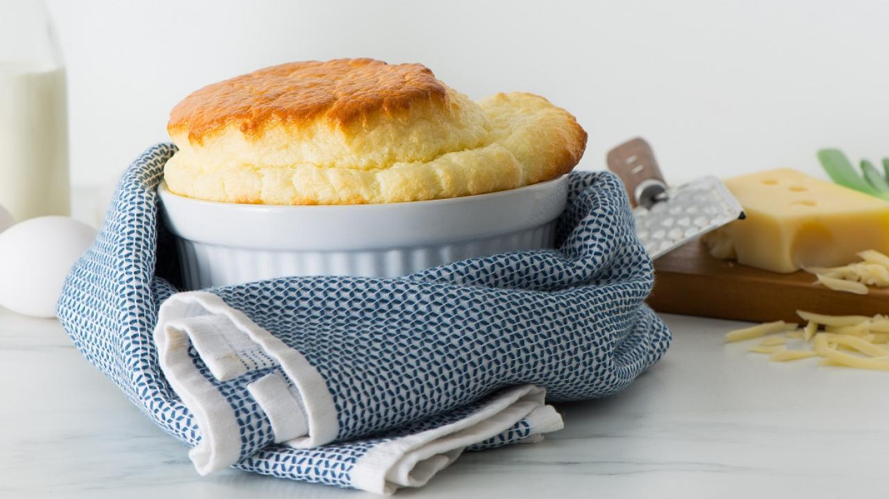

Souffle

Ingredients
- 1 tbsp butter
- 2 tbsp sugar
- 2 eggs
- 1 tbps flour
- 1/4 tsp salt
- 1/2 tsp vanilla extract
- 1 tsp lemon zest
- 2 oz crema cheese
- 1/4 cup, 1 tbsp, 1 tsp cheese
- pinch of salt
Steps
- Preheat the oven to 400 degrees F (200 degrees C).
- Brush butter on the bottom and up the sides of two 5 1/2-ounce ramekins. Scoop in some sugar; rotate ramekins to coat while pouring most of the sugar back into its container. Place ramekins on a shallow baking pan.
- Separate eggs between 2 bowls. Add sugar, flour, 1/4 teaspoon salt, vanilla extract, lemon zest, cream cheese, and Cheddar cheese to the yolks. Mix the souffle base with a spatula until sugar and flour disappear.
- Sprinkle a pinch of salt over the room-temperature egg whites. Beat with a whisk until soft peaks form; peaks should hold their shape but not be stiff or dry. Stir and fold 1/2 of the egg whites into the souffle base until combined. Gently fold the rest of the egg whites into the batter.
- Fill ramekins up to the lip with the batter.
- Bake in the preheated oven until puffed and browned, about 12 minutes. Serve immediately.